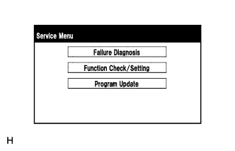
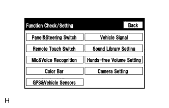
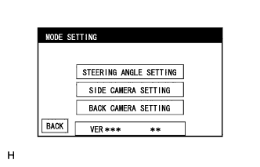
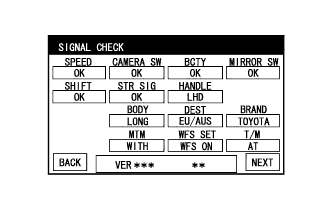
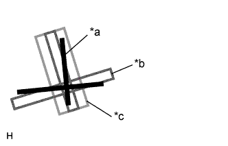
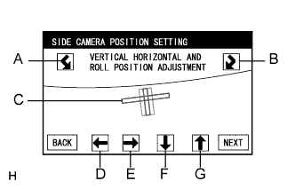
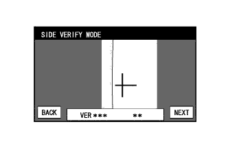
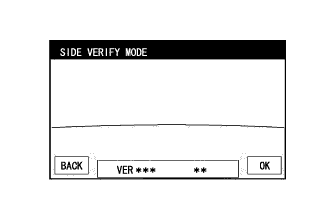

СИСТЕМА МОНИТОРА БОКОВОГО ОБЗОРА (для моделей с системой помощи при парковке) > КАЛИБРОВКА |
| НАСТРОЙКА СИСТЕМЫ МОНИТОРА БОКОВОГО ОБЗОРА |
Систему монитора бокового обзора можно настроить на экране диагностики дисплея модуля системы навигации и индикации.
Если были произведены перечисленные ниже действия, необходимо выполнить соответствующие регулировки и проверки с использованием экрана диагностики.
| Наименование детали | Действие | Регулируемый параметр | Следующий шаг |
| Витой кабель в сборе |
| Нейтральное положение рулевого колеса |
Нажмите здесь
|
| Установка угла поворота рулевого колеса |
Нажмите здесь
| ||
| Витой кабель с датчиком в сборе | Замена | Нейтральное положение рулевого колеса |
Нажмите здесь
|
| Настройка угла поворота рулевого колеса |
Нажмите здесь
| ||
| ЭБУ системы помощи при парковке | Замена | Инициализация ЭБУ системы помощи при парковке |
Нажмите здесь
|
| Подвеска, шины и т.д. | Высота подвески автомобиля изменяется вследствие замены деталей подвески или шин | Оптическая ось задней телекамеры (регулировка положения камеры) |
Нажмите здесь
|
| Оптическая ось боковой телекамеры (регулировка положения камеры) | Настройка положения боковой камеры | ||
|
| Оптическая ось боковой телекамеры (регулировка положения камеры) | Настройка положения боковой камеры |
| Наружное зеркало заднего вида в сборе | Замена | Оптическая ось боковой телекамеры (регулировка положения камеры) | Настройка положения боковой камеры |
| НАСТРОЙКА ПОЛОЖЕНИЯ БОКОВОЙ КАМЕРЫ |
Подготовка к настройке
Припаркуйте автомобиль так, чтобы рулевое колесо находилось в центральном положении.
Установите полосу для регулировки оптической оси телекамеры со стороны переднего пассажира.
| А | B | C | D | E | F |
| 1183 мм (3,88 фута) | 1181 мм (3,87 фута) | 500 мм (1,64 фута) | 500 мм (1,64 фута) | 500 мм (1,64 фута) | 180 мм (0,59 дюйма) |
| *a | Полоса для регулировки боковой камеры | *b | Ось переднего колеса |
| *c | Передняя сторона | *d | Центральная ось автомобиля |
Войдите в режим диагностики (Нажмите здесь).
|  |
Выберите "Function Check/Setting" (проверка/настройка функций) на экране "Service Menu" (меню обслуживания).
|  |
Выберите "Camera Setting" (настройка камеры) на экране "Function Check/Setting".
|  |
На экране "MODE SETTING" (настройка режима) выберите пункт "SIDE CAMERA SETTING" (настройка боковой камеры).
|  |
Выберите "NEXT" (далее) на экране "SIGNAL CHECK".
|  |
НАСТРОЙКА ПОЛОЖЕНИЯ БОКОВОЙ КАМЕРЫ
| *a | Полоса для настройки положения боковой камеры |
| *b | Красная рамка |
| *c | Желтая рамка |
|  |
Отрегулируйте угол крена.
Нажимая кнопки A и B, поверните линию C так, чтобы она оказалась параллельна полосе регулировки.
Отрегулируйте положение по вертикали и горизонтали.
Нажимая на кнопки направлений D, E, F и G, сместите C так, чтобы полоса регулировки D оказалась в центре C.
Нажмите "NEXT" (далее), чтобы перейти на экран "SIDE VERIFY MODE" (режим проверки бокового обзора).
|  |
РЕЖИМ ПРОВЕРКИ БОКОВОГО ОБЗОРА Со стороны переднего пассажира
Убедитесь, что красный крест и полоса регулировки совмещены.
Выберите "NEXT" (далее), чтобы сохранить настройку ориентации камеры и перейти на экран STEERING ANGLE SETTING (установка угла поворота рулевого колеса).
Убедитесь, что экран для камеры со стороны водителя отображается правильно.
|  |
РЕЖИМ ПРОВЕРКИ БОКОВОГО ОБЗОРА со стороны водителя (для моделей с монитором типа местности)
Проверьте экран для камеры со стороны водителя в соответствии с подсказками на экране.
Выйдите из режима диагностики (Нажмите здесь).